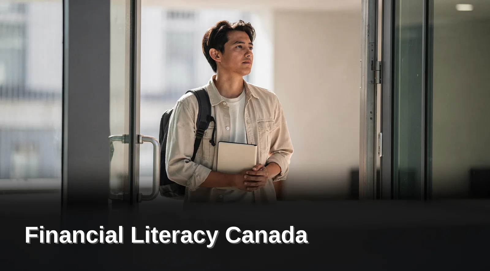

Financial Literacy Canada: Master Your Budget

Canadians improve financial literacy by joining Credit Pulse, which offers six membership tiers — Starter through Elite — combining budgeting tools, debt-management resources, and cashback rewards. Zero hidden fees and no credit checks let members safely build money-management skills while earning same-day cashback toward their financial education.
Financial literacy in Canada improves through structured education, practical budgeting tools, and consistent habit-building, as highlighted during Financial Literacy Month, led by the Financial Consumer Agency of Canada. Credit Pulse supports Canadian residents with budgeting resources, debt-organization tools, and an educational library, pairing financial lessons with membership cashback to ease the cost of learning.
Key Takeaways
- Canadian households carry over $3 trillion in credit-market debt, with a debt-to-disposable-income ratio near 172–174%.
- The national household saving rate has slipped to roughly 4–5%, leaving thinner cushions than before.
- Financial Literacy Month runs every November, led by the Financial Consumer Agency of Canada.
- Better habits come from structure, not willpower — small repeatable steps beat one ambitious overhaul.
- Joining a Credit Pulse membership involves no credit check and carries no credit score risk.
What Should You Know Before You Start?
Preparation matters more than enthusiasm when tackling personal finances in Canada. Canadian households now carry over $3 trillion in credit-market debt, with a debt-to-disposable-income ratio hovering around 172 to 174%. That number reflects years of borrowing against stagnant wages, not a single bad decision.
Rising grocery, gas, rent, and utility costs are squeezing budgets harder than ever, leaving many households with less room to save. The national household saving rate has slipped to a modest 4 to 5%, a sign that cushions are thinner than they used to be.
| Canadian household snapshot | Figure | What it signals |
|---|---|---|
| Total credit-market debt | Over $3 trillion | Mortgages, credit cards, lines of credit and loans combined |
| Debt-to-disposable-income ratio | ~172–174% | About $1.72 owed for every dollar of after-tax income |
| Household saving rate | ~4–5% | Thin buffers against an unexpected cost |
Figures reported in the Financial Literacy Basics Canadian Starter Guide.
Why Does Timing Matter for Building Financial Skills?
November carries extra weight for this work. The Financial Consumer Agency of Canada, together with the Financial Literacy Action Group, designates it Financial Literacy Month, making it a natural checkpoint for reviewing habits. Starting a budget review or debt plan during this period lines up with national momentum, though progress works any month.
Who Struggles Most With Canada's Financial System?
Newcomers often find Canada's banking system unfamiliar at first. Terminology, account types, and credit rules differ from what many are used to elsewhere. Before diving into budgeting tools for Canadians or debt management Canada strategies, understanding these basics prevents costly missteps. A clear starting point, paired with a structured financial education membership, gives members steadier footing from day one.
How Do You Build Better Budgeting Habits?
Better budgeting habits start with structure, not sheer willpower. Canadian households build that structure by pairing clear financial goals with resources designed for their own cost of living, rather than generic templates borrowed from another country's tax system. Credit Pulse supports this through a financial education membership that bundles budgeting resources, debt-organization tools, and partner offers into one place.
Building financial literacy in Canada rarely happens overnight. Small, repeatable steps work better than one ambitious overhaul. Members follow a simple process to get started:
- Gather basic personal details: full name, email address, phone number, and province.
- Submit the membership application, which takes under five minutes to complete.
- Skip the credit check entirely. Credit Pulse is not a lender and does not issue credit products.
- Verify identity securely through participating Canadian banks.
- Begin using budgeting tools for Canadians and educational content included with the membership.
If your income arrives in an unpredictable rhythm, the sequence shifts slightly. Our guide on how to budget on an irregular income in Canada covers a floor-based method built for tradespeople, freelancers, and gig workers.
What Tools Support Debt Management in Canada?
Debt-organization tools help households see balances, due dates, and payment priorities in one view. Clearer visibility makes debt management in Canada feel less overwhelming, especially for members juggling multiple accounts. Our companion guide to budgeting tools for Canadians breaks down how those pieces fit together.
Does Signing Up Affect Your Credit Score?
No. The application process involves no credit check, so exploring membership options carries no credit score risk. Pricing stays transparent too, with zero hidden fees built into any package. That combination lets members focus on learning and habit-building, not fine print. The how it works overview walks through each verification step in order.
What Mistakes Should You Watch Out For?
Common missteps include waiting too long to start, confusing education with lending, and ignoring free tools already built for Canadian households. Rising household debt across Canada makes these errors costly, especially since understanding how to budget, save, borrow, and invest has become essential rather than optional for most families.
Three mistakes stand out most often:
- Delaying financial literacy Canada education until a crisis hits, rather than building habits early.
- Mistaking a financial education membership for a loan product, when none is offered or implied.
- Skipping budgeting tools for Canadians because progress feels slow at first.
Is It Too Late to Build Financial Literacy as an Adult?
No stage of life closes that door. Lessons typically taught in childhood still apply, often with more impact once real bills and real decisions enter the picture.
Does Credit Pulse Lend Money or Extend Credit?
Credit Pulse does not lend money, extend credit, or issue credit cards. Membership fees cover educational content, debt management Canada tools, and cashback benefits only, keeping the relationship separate from borrowing entirely.
Which Free Budgeting Tools Can Canadians Use Today?
Education works best when there is something to apply it to. Two free downloads give Canadian households a practical starting point before any membership decision:
- Credit Pulse Budget Tool — a free Excel worksheet for tracking monthly income, fixed costs, and discretionary spending in one view.
- Canadian Debt Payoff Tool — a free Excel planner for listing balances, interest rates, and payoff order so debt stops feeling abstract.
Both are free to download and pair naturally with the paid membership tiers for members who want cashback rewards and structured financial education alongside the spreadsheets.
Frequently Asked Questions About Financial Literacy in Canada
What is financial literacy and why does it matter in Canada?
Financial literacy is the ability to understand and apply everyday money skills: budgeting, saving, borrowing and investing. It matters in Canada because households now carry over $3 trillion in credit-market debt and the national saving rate has slipped to roughly 4 to 5%, which leaves far less room for error than it used to.
When is Financial Literacy Month in Canada?
Financial Literacy Month runs every November in Canada. It is designated by the Financial Consumer Agency of Canada together with the Financial Literacy Action Group, which makes November a natural checkpoint for a budget review or a debt plan. Progress works in any month, but the national momentum helps.
Does joining a financial education membership affect your credit score?
No. The Credit Pulse application involves no credit check, so exploring membership options carries no credit score risk. Pricing stays transparent as well, with zero hidden fees built into any package, which lets members focus on learning and habit-building rather than fine print.
Is it too late to build financial literacy as an adult?
No stage of life closes that door. The lessons typically taught in childhood still apply as an adult, and they often land with more impact once real bills and real decisions enter the picture.
Does Credit Pulse lend money or extend credit?
Credit Pulse does not lend money, extend credit or issue credit cards. Membership fees cover educational content, debt management tools and cashback benefits only, which keeps the relationship entirely separate from borrowing.
How can newcomers to Canada start building financial literacy?
Newcomers often find Canada's banking system unfamiliar at first, because terminology, account types and credit rules differ from what they are used to elsewhere. Understanding those basics before diving into budgeting tools or debt strategies prevents costly missteps, and a structured financial education membership gives steadier footing from day one.
Conclusion: Build Financial Confidence Step by Step
In closing, improving your financial literacy isn't a one-time effort — it's a practice you build over time with the right tools and support. The steps we've covered, from tracking spending to understanding debt, work best when you have access to education that meets you where you are.
That's why membership platforms designed around financial learning, cashback rewards, and practical budgeting tools exist: to remove the friction from getting smarter with money. Start where you are, use what's available to you, and trust that each small step compounds into real financial confidence.
Ready to put your financial knowledge to work?
Choose a Credit Pulse membership package and start earning up to $1,500 in cashback while building real financial skills — with no credit check.